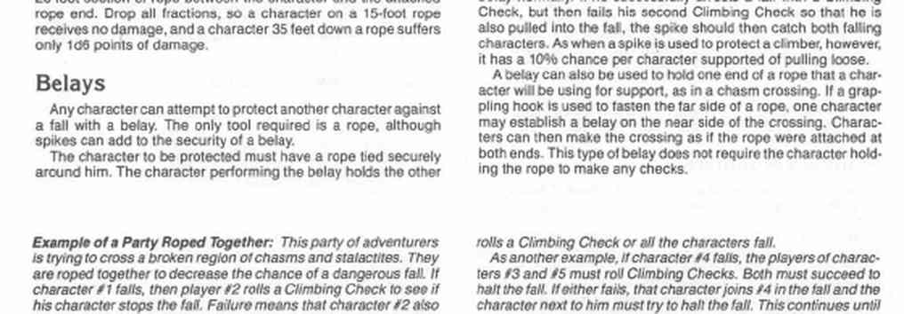

摆荡、保护与结绳
若绳子只在一端固定，角色会随绳子摆向障碍物。撞击时立即进行攀爬检定，每有 10 英尺绳长，成功率 −5%。失败即从绳上跌落；撞击还按绳长每 20 英尺造成 1d6 伤害（不足 20 英尺不计）。
任何角色都可用绳索保护另一人跌落；尖钉可提高安全性。被保护者将绳子系牢，保护者缓慢放绳。对方跌落时，保护者必须进行攀爬检定；成功可把对方限制在绳长以内，失败则照常跌落。若保护者处在危险位置，还必须进行第二次检定保持抓握；失败会与同伴一起跌落。每多一名坠落者，保护者的成功率再 −10%。尖钉固定时，支撑每名角色有 10% 几率拔出。保护也可代替近端锚点，使跨越者视同绳子两端都固定。
多人以绳索连在一起时，所有人按最慢者移动。有人跌落，绳索两侧相邻的角色必须进行攀爬检定；两人都成功，才能停住坠落者。若一人失败，他会加入坠落，另一侧角色仍须继续检定；每多一名坠落者，执行保护的角色攀爬成功率 −10%。这一过程持续到坠落点两侧各有一名角色成功抓牢，或某一侧（或两侧）的所有角色都跌落为止。
将队伍连在一起时，角色之间应留出 20 或 30 英尺的松弛绳长；这能确保没有单个成员会独自承受致命坠落的全部后果，但代价是全队可能一起坠落。应记录队伍在绳上的顺序（第一人、第二人等），或用棋子表示。若某人跌落，他两侧的角色都必须检定；若两次都成功，坠落立即停止。若一人成功而另一人失败，成功者必须以 −10 修正再次检定，以制止两名坠落者；同时，紧邻第二名坠落者的角色必须检定，尝试抓住两人。每当又有一名角色的重量加到坠落者一侧，尚未坠落且紧邻坠落者的角色都必须检定。若坠落者位于绳队末端，只需由其唯一相邻者检定；因此让最擅长攀爬的角色位于队首或队尾更有利。
